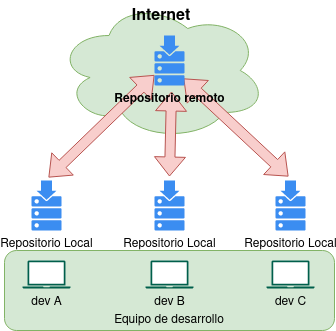
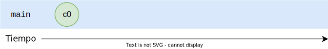
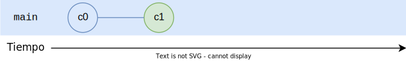
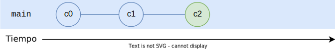
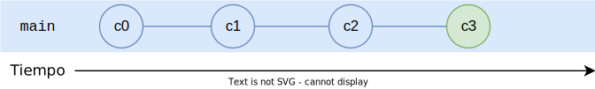
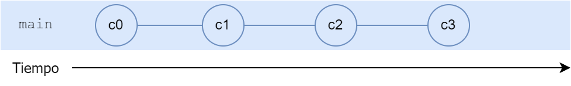
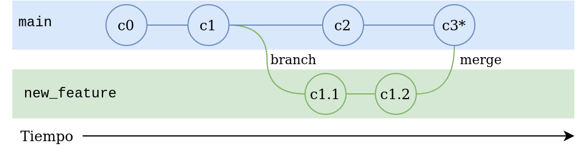

Git es un software para control de versiones (VCS del inglés Version control system) diseñado por Linus Torvalds y es de código abierto.
El control de versiones se refiere al proceso de guardar diferentes versiones a lo largo de las etapas de un proyecto. No solo versiones completas, si no cambios en el código fuente.
Con el control de versiones podemos, en cualquier momento, volver a una versión anterior cuando queramos.
¡NO! Github es una plataforma para almacenar repositorios remotos de git. Hay muchas otras alternativas a GitHub siendo la mas relevante hoy en día GitLab.
Imaginemos que estamos en un equipo de desarrollo de software de muchas personas trabajando sobre el mismo software. ¿Se imaginan compartir el código entre todos?.
Por ejemplo, si alguien abre un archivo en modo escritura, ninguna otra persona podría acceder con permisos de escritura. No habría seguimiento de cambios que hizo cada desarrollador.
Hoy en día, el software de control de versiones mas popular es Git. Y es de suma importancia para los desarrolladores comprender su funcionamiento.
Git, que presenta una arquitectura distribuida (o descentralizada). En lugar de tener un único espacio para todo el historial de versiones del software (arquitectura centralizada), como sucede de manera habitual en los sistemas de control de versiones, como CVS o Subversion, en Git, la copia de trabajo del código de cada desarrollador es también un repositorio Es decir, cada desarrollador tendrá una copia del repositorio completo en su estación de trabajo.
La arquitectura distribuida presenta una ventaja, ya que si el servidor donde está alojado nuestro código por alguna razón llega a no estar disponible por un momento, podemos seguir trabajando al tener una copia en nuestra estación de trabajo.
Caso contrario, en una arquitectura centralizada NO podremos no solamente acceder a los nuevos cambios que introdujeron los otros desarrolladores, sino tampoco a nuestro código donde estábamos trabajando.
Otra ventaja es que en Git casi todas las operaciones son locales. Reduciendo el tráfico de la red.
Commits
Commits
Commits
Commits
Commits
git commit -m "Mensaje de cambios"Usando branchs
main y new_featurenew_feature con main.main, new_feature y bug_fixmain, de hecho la mayoría de veces algún branch está por delante del mainExisten muchos mas conceptos asociados a Git. Estos son los conceptos mas básicos.
Cada uno de los conceptos citados tiene una forma de consultarlos. Por lo general es con comandos de git o mediante herramientas gráficas.
git add archivo.txt # Agrega un archivo en particular
git add * # Agrega todos los archivos
git commit -m "Descripción del commit"
Estos son los comandos que mas va a utilizar. Puede practicar en Learn Git Branch. Tenga en cuenta que para simplificar, en dicha página no hace falta hacer git add ni tampoco agregar un comentario al commit.
git branch branch1 # Crea un nuevo branch
git checkout branch2 # Crea un nuevo branch o cambia a existente
git checkout -b branch3 # Crea un nuevo branch y cambia el HEAD
git switch branch1 # Cambia el HEAD al último commit de branch1
git checkout branch1 # Cambia el HEAD al último commit de branch1
git switch a123dd # Cambia al commit hash a123dd
git checkout a123dd # Cambia al commit con hash a123dd
En Learn Git Branch algunos comandos pueden no funcionar como git checkout -b pero el resto es completamente funcional.
git switch main # Cambio al branch main
git merge develop # Fusiono desde develop a main
Conflictos (Conflict): Los conflictos ocurren cuando dos ramas tienen cambios conflictivos en el mismo lugar del archivo. Debes resolver estos conflictos manualmente antes de fusionar las ramas.
Git es una herramienta poderosa para el control de versiones que te permite colaborar en proyectos, realizar un seguimiento de cambios y mantener un historial detallado de tu trabajo.
Existen herramientas gráficas para ayudarnos a usar Git como GitHub Desktop (MIT), Git Kraken (Privativo), Git Graph (Extensión para VsCode)(License). Mas clientes GUI para Git.
Hoy en día es indispensable para cualquier desarrollador de software tener conocimientos de Git ya que es hoy por hoy la herramienta mas usada para versionar código a nivel mundial.
Desde el sitio LearnGitBranching realizar lo siguiente:
main crear un nuevo branch llamado bugFixbugFixmain y hacer otro commitbugFix a main